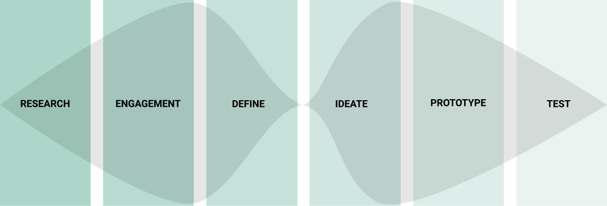
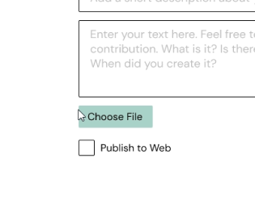
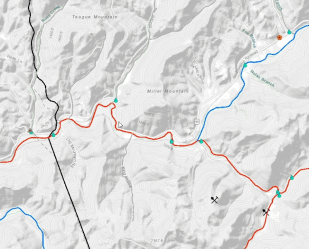

Power Reclamation through Technology
Enhancing Clearfork’s ad hoc local network to address community needs
Target User
A resident from Clearfork Valley in rural Tennessee who has had limited experience using the
internet.
Goal
Enhance Clearfork’s ad hoc local network to address the needs of the community.

Process

Research & Engagement
Clearfork Valley, a remote area of northeastern Tennessee.
Clairfield occupies a relatively broad hollow along the Clear Fork just east of the Claiborne-Campbell county line, and south of the Tennessee-Kentucky state line. Eagan lies further down the valley to the west. Tennessee State Route 90 is the only major highway in the area.
https://en.wikipedia.org/wiki/Clairfield,_Tennessee
Clairfield occupies a relatively broad hollow along the Clear Fork just east of the Claiborne-Campbell county line, and south of the Tennessee-Kentucky state line. Eagan lies further down the valley to the west. Tennessee State Route 90 is the only major highway in the area.
https://en.wikipedia.org/wiki/Clairfield,_Tennessee
Mining
Clearfork area has been mined repetitively since 1905. In recent years, surface mining sites
were proposed by Kopper Glo in 2012, 2016 and 2020.
“While the mining industry may create jobs, under-provision of basic life-supporting amenities such as health care and education raises questions about the viability of the mining industry as a long term strategy for sustainable development.”
“While the mining industry may create jobs, under-provision of basic life-supporting amenities such as health care and education raises questions about the viability of the mining industry as a long term strategy for sustainable development.”

Economic Issues
These include: chronic high unemployment and poverty levels 2.5 times higher than the national
level and 2.2 times higher than the state level.
Social Issues
These include: no ambulance service, the highest death rate in Tennessee due to the opioid
crisis, and high gas prices and a lack of cars despite the nearest grocery store and hospital 30 minutes away.

Results
Minimal Viable Product
A demo video for our Minimum Viable Product (MVP) is included below. This MVP was developed based on the user testing of our various prototype iterations to focus on the community’s immediate priorities, also taking into account the current status of the Archive and PNK initiatives. Thus, our MVP emphasizes the following features:
Homepage
Retaining the simple homepage while including imagery
Promoting comprehension through revising labels, i.e. “Etherpad” becomes “Notepad”
Reincorporating the PNK’s comments feature as a virtual guestbook
Archive
Showing content on the archive landing page to aid in discovery
Providing a template that allows for flexibility
Accommodating a variety of file types and quantity of files
Future Considerations

Publish to Web
The archive should eventually allow those outside of Clearfork, especially those from the community who moved away, to access the archive’s contents via the web.
This feature ensures that archive participants stay in control of their data, allowing them to decide if their entries should be made available online or remaing local.

Water Quality Mapping
CCI has been collecting local water quality data to monitor the local impacts of surface mining and climate change.
To best accomodate this data, an interactive, local network-based mapping tool could be created. However, this is currently beyond the features of the Wordpress currently being used on the PNK.
Reflections
Key PIT Takeaways
Appalachia has been marred by a history of resource extraction, so any technology deployed must avoid continuing and actively dismantle
the cycle of extraction (of attention, data, etc.) perpetuated by many
technologies.
The Public Interest Technology Design Process assessed for bias,
exclusion, representation, consequences, risks, trade-offs and other systemic
reflections to create a product that is designed with and for the community.
It is necessary to research existing conditions in order to create
technology that is implementable for the community given any constraints.
Working with the community and allowing them to be part of the
design process is critical to understanding their needs, as well as creating
community ownership of the project.
PIT Challenges
For Engagement stage of the design process, we were working with a community that has low access to reliable internet. Fortunately, we were able to work with CTNY and their ethnographer, who had already engaged with the local community. Having a knowledgeable partner to help with engagement was of paramount importance to the project. On the definition stage, we had many discussions about unintended consequences around data, privacy, and misinformation. With that in mind, we came to the decision with our partners to have an administrator moderate archive posts. We also thought it was necessary to have the community have control over the archive data.
PIT Opportunities
The PIT design process allowed for many opportunities for collaboration and knowledge sharing, which ultimately led to a richer final design. With a heavy focus on participation, following the process led us to work hand and hand with our partner (CTNY), the community (through April), and an outside expert (Jason from LibraryBox). Through this we were more aware of the issue of accessibility and ensuring that people were not unintentially excluded.
The PIT design process allowed for many opportunities for collaboration and knowledge sharing, which ultimately led to a richer final design. With a heavy focus on participation, following the process led us to work hand and hand with our partner (CTNY), the community (through April), and an outside expert (Jason from LibraryBox). Through this we were more aware of the issue of accessibility and ensuring that people were not unintentially excluded.

Acknowledgements
This project would not be possible without the support of following people:
Houman Saberi, Ever Bussey, Raul Enriquez and Greta
Byrum of Community Tech New York (CTNY)
April Jarocki of the Southern Connected Communities Project in
Clearfork, Tennessee
Thank you to our advisors:
Mark Hansen, Lydia Chilton, Laura Kurgan and Celeste Layne, as well as
Stacy Tao and Anne-Laure Razat
Team Members:
Regina Alcazar, Dillon Davis, Zuzanna Jarzynska, Karen Lin, Yuanyang Teng,
Evan Tilley, Ian Wach, Bonnie Wang